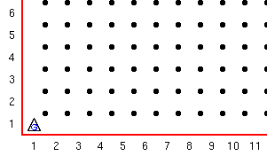
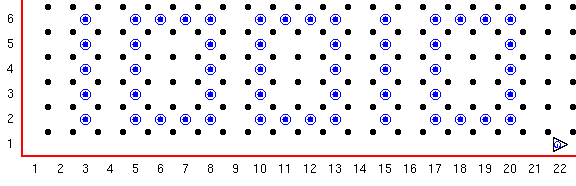

Guido is achtien jaar oud geworden en hij wil dat aan zoveel mogelijk mensen laten weten. Maar aangezien hij niet kan praten, kan hij alleen maar het nummer achttien schrijven met behulp van piepers.
Aangezien Guido een robot is die uitsluitend in binair (1 en 0) denkt schrijft hij het decimale 18 als het binaire 10010.
Definieer twee nieuwe functies:
teken_een om het cijfer 1 met piepers te schrijven.
teken_nul om het cijfer 0 met piepers te schrijven.
Gebruik deze functies in een GvR programma om Guido's verjaardag bericht te schrijven. Elk van deze functies moet Guido weer goed neerzetten voor het volgende cijfer. Het programma moet deze functies gebruiken om een binaire 18 te maken. (10010) Als het programma begint moet het er zo uitzien:

En als het programma klaar is:

Deze serie Guido van Robot lessen zijn geschreven door
Roger Frank.
Commentaar and suggesties over deze lessen kunnen gestuurd worden naar
Stas Zytkiewicz die de lessen
vertaalde naar het Nederlands.
De orginele lessen zijn te vinden op de
Guido van Robot website.
Copyright
© 2003 Jeffrey Elkner.
© 2007 Stas Zytkiewicz.